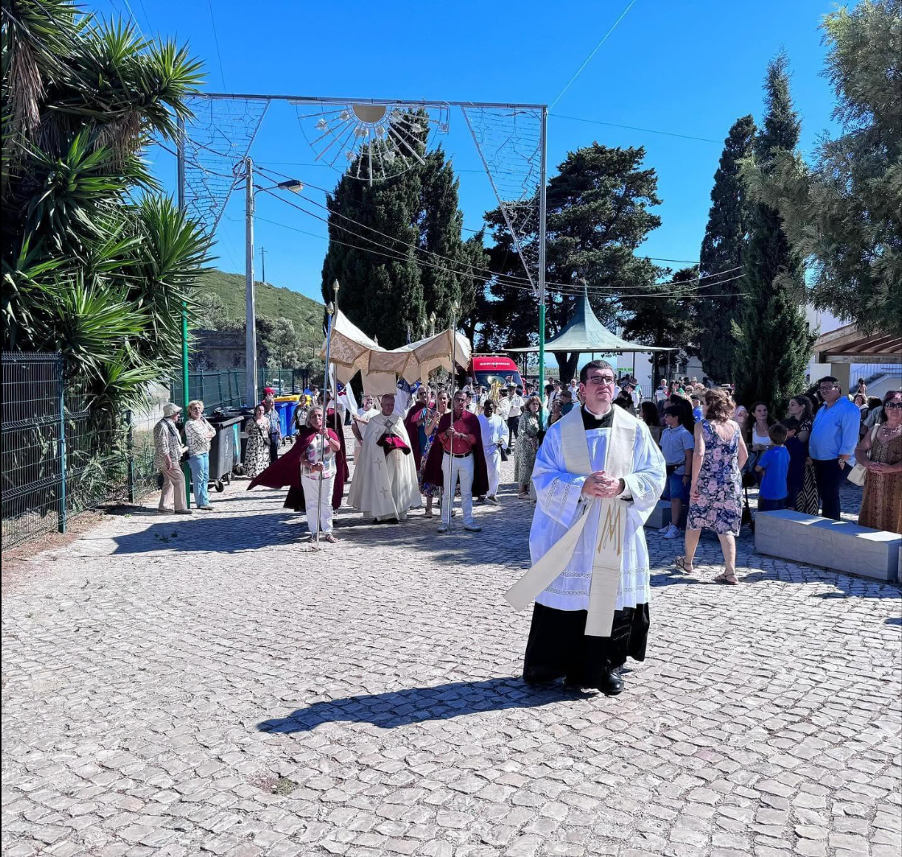
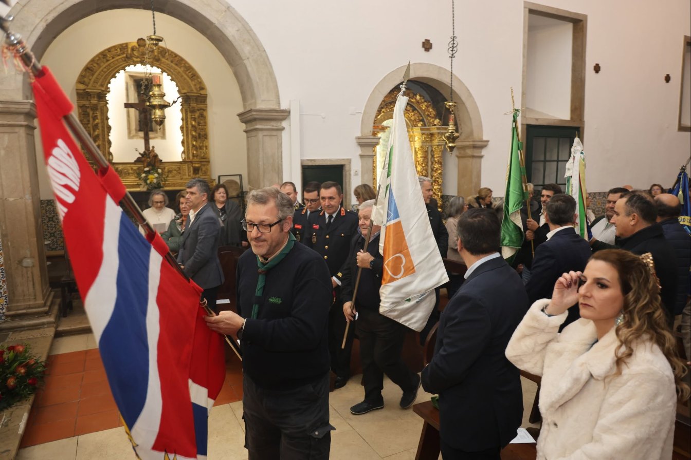

Na comunidade
Fotos identificadas
Momentos das Festas em Honra de Nossa Senhora da Assunção em que a AISA foi identificada — fotografias de terceiros, a confirmar autorização de utilização junto de quem as publicou.


Da infância ao envelhecimento, a AISA acompanha as famílias da Malveira da Serra e Janes há mais de 30 anos — com equipa local e acordos de comparticipação da Segurança Social.
Fotografias reais da AISA, via Facebook — a confirmar direitos de utilização e consentimentos antes de publicação.
Cuidamos da comunidade em cada etapa da vida — com serviços de saúde complementares em todas as valências.
Actividades, refeições e companhia durante o dia, com regresso a casa à noite.
Saber mais →Cuidados e apoio na própria casa, para quem prefere manter a sua rotina.
Saber mais →"Aqui, não és só mais um processo — és o Sr. António, que todos os dias vem tomar o pequeno-almoço connosco."
Fundada pela própria população da Malveira da Serra e Janes, a AISA cresceu com a comunidade que serve. Hoje juntamos numa só casa o cuidado aos mais novos e aos mais velhos — com fisioterapia, psicologia e terapia da fala como apoio a todas as idades.
A nossa história
Momentos das Festas em Honra de Nossa Senhora da Assunção em que a AISA foi identificada — fotografias de terceiros, a confirmar autorização de utilização junto de quem as publicou.


Por transferência, MB Way ou consignação de 0,5% do IRS. O seu apoio ajuda a Dona Fernanda a continuar a ter as suas tardes de costura na AISA.
Ver como apoiarTempo, companhia ou uma competência a partilhar — o voluntariado que a nossa comunidade precisa.
Candidatar-meVagas actuais na equipa técnica e de apoio directo. Venha cuidar com quem já cuida há 30 anos.
Ver vagasSaiba como consignar 0,5% do seu IRS à AISA sem custo nenhum para si.
Ler mais →Utentes do centro de dia e crianças da valência de infância juntaram-se numa tarde de convívio.
Ler mais →Alargámos as consultas de fisioterapia a mais duas tardes por semana.
Ler mais →Pode contar connosco — para pedir informação sobre uma valência, candidatar-se a uma vaga ou simplesmente conhecer a AISA.